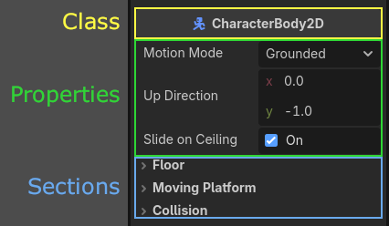
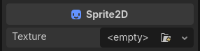
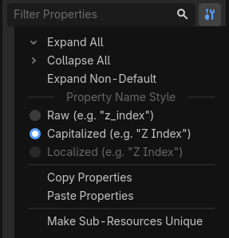

Inspector Dock
The Inspector dock lists all properties of an object, resource, or node. It will update the list of the properties as you select a different node from the Scene Tree dock, or if you use Open command from the FileSystem's context menu.

This page explains how the Inspector dock works in-depth. You will learn how to edit properties, fold and unfold areas, use the search bar, and more.
Usage
If the inspector dock is visible, clicking on a node in the scene tree will automatically display its properties. If it is not visible, you can show it by navigating to Editor > Editor Docks > Inspector.
At the top of the dock are the file and navigation buttons.

From left to right:
Opens a new window to select and create a resource in the memory and edit it.
Opens a resource from the FileSystem to edit.
Saves the currently edited resource to disk.
Provides options to:
Edit Resource from Clipboard by pasting the copied resource.
Copy Resource to clipboard.
Show in FileSystem if the resource is already saved.
Make Resource Built-In to work in a built-in resource, not the one from the disk.
The "<" and ">" arrows let you navigate through your edited object history.
The button next to them opens the history list for a quicker navigation. If you created multiple resources in the memory, you will also see them here.
Below, you can find the selected node's icon, its name, and the quick button to open its documentation on the right side. Clicking on the node's name itself will list the sub-resources of this node if there are any.
Then comes the search bar. Type anything in it to filter displayed properties.
Delete the text to clear the search.
This search is case insensitive and also searches letter by letter as you type.
For instance, if you type vsb, one of the results you see will be
Visibility property as this property contains all of these letters.
Before discussing the tool button next to the filter bar, it is worth mentioning what you actually see below it and how it is structured.

Properties are grouped inside their respective classes as sections. You can expand each section to view the related properties.
You can also open the documentation of each class by right-clicking on a class and selecting Open Documentation. Similarly, you can right click on a property and copy or paste its value, copy the property path, favorite it to be shown on the top of the inspector, or open its documentation page.
If you hover your mouse over a property, you will see the description of what it does as well as how it can be called inside the script.
You can directly change the values by clicking, typing, or selecting from the menu. If the property is a number or a slider, you can keep your left mouse button pressed and drag to change the values.

If a node's property is a sub-resource, you can click on the down arrow to pick a resource type, or load one using the Quick Load or Load options. Alternatively, a supported resource can be dragged from the FileSystem. Once you start dragging, the compatible property will be highlighted. Simply drop it on the appropriate property's value.
After loading a sub-resource, you can click on it to see its properties or adjust them.
The values with different values than their original values will have a revert icon (). Clicking on this icon reverts the value to its original state. If the values are linked with each other, they will have a chain icon and changing one will change others as well. You can unchain them by clicking on this icon.
If you are changing a property a lot, you may consider favoriting it by right-clicking and choosing Favorite Property. This will show it at the top of the inspector for all objects of this class.
Now that we have a better understanding of the terms, we can proceed with the tool menu. If you click the tool menu icon next to the filter bar, a drop-down menu will offer various view and edit options.

Expand All: Expands all sections showing all available properties.
Collapse All: Collapses all properties showing only classes and the sections.
Expand Non-Default: Only expands the sections where the original value is different than the current value (the properties with a revert icon ()).
Property Name Style: This section determines how the properties' text is displayed in the inspector.
Rawuses the property's own naming,Capitalizeduses title case by changing the initial letters of each word to uppercase and removing underscores,Localizeddisplays the translation of the properties if you are using the Editor in a language other than English.Copy Properties: Copies all properties of the current node with their current values.
Paste Properties: Pastes the copied properties from the clipboard. Useful to apply the common properties of one node to another.
Make Sub-Resources Unique: By default, a duplicated node shares the sub-resources of the original node. Changing one parameter of the sub-resource in one node, affects the other one. Clicking this option makes each sub-resource used in this node unique, separated from other nodes.
Tip
If a node has exported variables in its attached script, you will also see these in the inspector. The first image in this section has one for the Player node: Action Suffix. See GDScript exported properties for more on this topic.
See also
Refer to Customizing the interface for dock customization options.